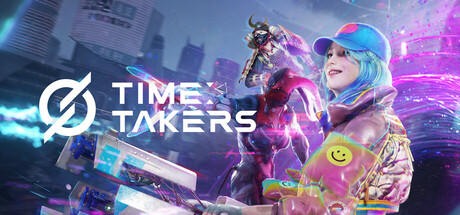

타임 테이커즈 스팀 플레이테스트 신청방법 9월5일 72시간 무료체험
엔씨(NC, 구 엔씨소프트)가 새로 준비하는 슈팅 신작 '타임 테이커즈(TIME TAKERS)'가 9월 5일부터 스팀에서 글로벌 플레이테스트를 엽니다. 처음 들어보시는 분들도 계실 텐데요, 오늘은 이 게임이 뭔지부터 일정·신청 방법까지 한 번에 정리해드릴게요. 스팀에서 처음 만나는 엔씨표 슈터라 게임명부터 낯설고 뭐부터 봐야 할지 헷갈리실 수도 있잖아요, 차근차근 짚어드릴게요. 저도 이번 참에 신청해두려고 하는데, 무료로 미리 체험해볼 수 있는 기회라 관심 있으신 분들은 놓치지 않으셨으면 해요.
타임 테이커즈, 어떤 게임인가요
타임 테이커즈는 미스틸게임즈(Mistil Games)가 개발하고 엔씨(NC)가 퍼블리싱을 맡은 3v3v3v3 3인칭 팀 서바이벌 슈터예요. 이름에서부터 느껴지시겠지만 '시간'을 그냥 배경 설정으로만 두는 게 아니라 진짜 자원처럼 쓰는 게 이 게임의 핵심 포인트더라고요. 스팀 페이지 소개 문구도 "시간을 차지하세요! 타임 테이커즈에서 시간은 곧 목숨입니다"라고 되어 있어서, 시간을 얼마나 확보하고 얼마나 빨리 소진되느냐가 생존과 바로 연결되는 구조로 보여요.
3v3v3v3이라는 표기에서 알 수 있듯이 한 판에 12명이 4개 팀으로 나뉘어 붙는 방식이라, 그냥 1대1로 맞붙는 슈터보다는 서바이벌 성격이 강한 대규모 난전형 슈터에 가깝다고 보시면 된답니다. 네 팀이 동시에 얽히다 보면 눈앞의 상대만 신경 쓰다가 다른 팀한테 허를 찔리는 상황도 자주 나오는데요, 판마다 신경 쓸 게 한둘이 아니잖아요. 엔씨가 이런 결의 슈팅 장르를 글로벌 스팀으로 직접 들고 나온다는 점도 눈에 띄고요. 스팀 공식 태그도 배틀로얄·히어로 슈터·팀 기반·전략으로 묶여 있어서, 배틀로얄 결의 히어로 슈터에 가깝다고 보시면 될 듯해요.

스팀에 올라온 타임 테이커즈 대표 이미지예요.
이미지 출처: 타임 테이커즈 스팀 스토어 페이지 · 네이버 본문엔 받아서 재업로드 권장
글로벌 플레이테스트 일정부터 확인해볼까요
한국시간(KST) 기준 9월 5일 오전 2시부터 9월 8일 오전 2시까지, 총 72시간 동안 스팀에서 진행돼요. 스팀 스토어 페이지에 임베드된 공식 공지에 "KST: 2026년 9월 5일(토) 02:00 AM ~ 9월 8일(화) 02:00 AM"이라고 명시돼 있어서, 시간대까지 정확하게 확인된 일정이에요.
게임을 미리 받아두고 싶으신 분들을 위한 사전 다운로드는 9월 3일부터 스팀 클라이언트에서 가능해요. 테스트 시작일 전에 미리 받아두시면 당일 바로 접속하기 편하시겠죠? 다만 신청서를 넣는다고 그 자리에서 바로 확정되는 건 아니고, 참가 권한이 열리면 그때 알림이 온다고 하니 그 알림을 받으신 뒤부터 9월 3일 사전 다운로드를 차례로 받아두시는 흐름으로 보시면 될 듯해요. 헷갈리기 쉬운 날짜들이라 표로 따로 정리해봤어요.
| 구분 | 일정 |
|---|---|
| 사전 다운로드 시작 | 9월 3일부터 (참가 권한을 받은 뒤 스팀 클라이언트에서) |
| 플레이테스트 시작 | 9월 5일 오전 2시 (KST) |
| 플레이테스트 종료 | 9월 8일 오전 2시 (KST) |
| 총 진행 시간 | 72시간 |
신청은 어떻게 하나요
스팀 '타임 테이커즈' 스토어 페이지에서 참여 신청을 넣으면 되는 구조예요. 페이지에 있는 플레이테스트 신청 버튼만 눌러두면 되니까 방법 자체는 어렵지 않더라고요. 신청은 아래 링크에서 바로 하실 수 있어요.
이 버튼 하나로 신청이 끝나요.
저도 이 페이지에서 신청해두려고요. 신청 자체는 간단한데, 신청한다고 바로 확정되는 건 아니라는 점만 아래 자주 묻는 질문에서 한 번 더 짚어드릴게요.
이번 빌드에서 뭐가 달라졌나요
지난 3월 진행된 1차 비공개 베타 테스트(CBT) 피드백을 반영해서 여러 부분이 손질됐어요. 게임사가 밝힌 주요 개선 사항은 아래와 같아요.
- 업그레이드 시스템 개편
- 캐릭터 외형 변경
- 색약 모드 지원 추가
- 훈련장 신설
- 튜토리얼 정비
- 포드(Pod) 시스템 수정
- 매칭 방식 및 밸런스 개선
특히 튜토리얼이랑 훈련장이 새로 붙은 걸 보면, 처음 접하는 유저도 헤매지 않게 신경 쓴 흔적이 보이더라고요. 색약 모드까지 챙긴 걸 보면 접근성 쪽도 같이 다듬은 것 같고요. 매칭 방식과 밸런스까지 손봤다고 하니, 3월 테스트 때 나왔을 법한 불편함들을 이번 빌드에 실제로 반영하려 한 흔적이 엿보여요. 다만 4팀이 얽히는 만큼 초반 적응은 꽤 빡셀 텐데요, 훈련장에서 미리 감을 잡아두면 좋을 듯해요.
목록의 포드(Pod) 시스템은 이름만 있고 설명이 따로 없어서, 정확한 기능은 테스트에서 직접 확인해봐야 할 듯해요.
PC 사양은 어느 정도 필요한가요
최소 사양은 RTX 2070에 램 16GB 정도고, 저장 공간은 20GB가 필요해요. 최소·권장 사양을 표로 정리해봤어요.
| 구분 | 최소 사양 | 권장 사양 |
|---|---|---|
| 운영체제 | Windows 10 64비트 | Windows 10 64비트 |
| CPU | Intel Core i5-9600K | Intel Core i5-11600K |
| RAM | 16GB | 16GB |
| 그래픽카드 | NVIDIA GeForce RTX 2070 8GB | NVIDIA GeForce RTX 3070 8GB |
| DirectX | DirectX 12 | DirectX 12 |
| 저장 공간 | 20GB | 20GB (SSD 권장) |
저장 공간 20GB는 미리 비워두시는 게 편하실 듯해요. 권장 사양은 SSD 설치가 좋다고 나와 있어요.
최소·권장 사양을 스팀 페이지에서 그대로 캡처해두면 좋아요.
한국어는 지원되나요
인터페이스·음성·자막 세 가지 모두 한국어를 지원해요. 스팀 페이지 언어 지원 표에서 직접 확인한 내용이라 걱정 안 하셔도 될 것 같아요. 슈터 장르는 말이 빨리 오가는 편이라 자막까지 한국어로 나온다는 게 특히 반가운 포인트더라고요.
정식 출시는 언제인가요
정식 출시일은 아직 공개되지 않았어요. 스팀 페이지에도 구체적인 날짜 없이 '출시 예정'으로만 표기돼 있고, 가격이나 한국 정식 서비스 여부 같은 세부 사항도 아직 자세히 안내된 게 없더라고요. 이번 플레이테스트가 정식 출시 전에 실제로 만나볼 수 있는 첫 기회에 가까운 셈이라, 관심 있으신 분들은 이번에 미리 감을 잡아두시는 게 좋을 것 같아요. 이후 정식 출시일이나 가격 정책이 공식적으로 나오면 그때 다시 업데이트해드릴게요.
자주 묻는 질문
Q. 타임 테이커즈는 무료로 즐길 수 있나요?
스팀 페이지에 '무료 플레이' 게임으로 등록돼 있어서, 적어도 지금 시점 기준으로는 부담 없이 찍먹해볼 수 있는 방식으로 보여요. 다만 정식 서비스의 구체적인 결제 정책까지는 아직 공식적으로 자세히 안내되지 않았으니, 출시 소식이 나오면 다시 확인해보시는 게 좋을 것 같아요.
Q. 신청하면 바로 참여할 수 있나요?
아니요, 신청한다고 그 자리에서 참가가 확정되는 구조는 아니에요. 스팀 안내에는 개발사가 순차적으로 참가 권한을 열어주는 방식이라고만 나와 있고 정확히 언제·누구부터인지는 안내되지 않아서, 저도 알림이 언제 올지는 예상하기 어렵더라고요. 그래도 신청 자체는 미리 해두시는 게 안전할 듯해요.
타임 테이커즈 정리
정리하자면, 타임 테이커즈는 미스틸게임즈가 만들고 엔씨가 퍼블리싱하는 3v3v3v3 3인칭 팀 서바이벌 슈터고, 한국시간(KST) 기준 9월 5일 오전 2시부터 9월 8일 오전 2시까지 72시간 동안 스팀에서 글로벌 플레이테스트가 열려요. 사전 다운로드는 9월 3일부터, 신청은 스팀 스토어 페이지에서 바로 하시면 됩니다. 정식 출시일이나 가격은 아직 공식적으로 확정된 게 없어서, 이번 테스트가 게임을 미리 만나볼 수 있는 거의 유일한 기회인 셈이에요.
한국어도 인터페이스부터 자막까지 다 지원되니까 언어 걱정 없이 편하게 참여하실 수 있을 것 같아요. 무료로 미리 해볼 수 있는 기회니까, 관심 있으신 분들은 신청 페이지부터 미리 열어두시는 걸 추천드려요.
✔ 신청·사전예약 안내 같이 보기 좋은 글
· 힐링게임추천 딩컴 투게더 어떤 게임? 비공개 테스트 사전 알림 신청 방법까지 (같은 주제 — 발행 시 링크 연결)
· 루미마스터 사전예약 정보 총정리 — 빌리빌리 힐링 몬스터 테이밍 신작 (같은 주제 — 발행 시 링크 연결)
참고한 곳
· 타임 테이커즈 스팀 스토어 페이지
※ 2026-08-25 기준으로 확인한 정보이며, 세부 일정·조건은 변경될 수 있어요.